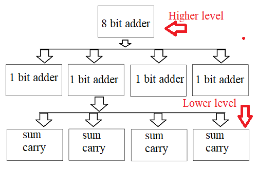

C. Design Strategy
From our previous discussions, it is clear that the VLSI design process is complex in nature. There is some useful technique to reduce the design complexity. These are discussed below.
- Design Hierarchy: This is similar to the divide and rule approach. A larger system with unmanageable complexity is further divided into smaller parts. This decomposition process will continue until and unless the complexity of the generated blocks is manageable. For example, one eight bit full adder can be decomposed into eight single bit adder. Now it is much more easier to design a single bit adder. Each single bit adder can be further divided in to sum and carry part. Finally, at the end of design process, all eight adders are connected and form the eight bit adder. The hierarchy process is shown in figure below.

- Regularity: At the time of decomposition, the designer must look for not only simple blocks but also similar types of block as much as possible. This strategy reduces the design time. For example, if one designer design a single bit adder, then same design will be repeated to form complete eight bit adder quickly.
- Modularity: After decomposition, the generated sub modules must have their well defined , independent functions and interfaces. This property permits the designer to test each sub module independently and to allow design of multiple component parallelly (since each modules are independent to each other).
- Locality: This property ensure that the interconnection between sub-modules should be within local places. That means, the modules should be placed closely to each other to avoid long distance wiring and thus reduces interconnect delays and also fabrication cost.
‹
›